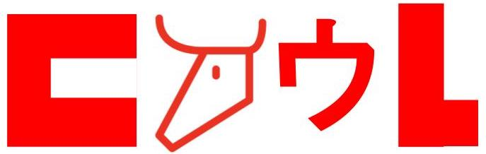

|
 [Image credit for Proto-Sinaitic ‘alp 𐤀 used in logo: here (CC-BY-2.5, Author: Pmx)] |
Third Workshop on Computation and Written Language (CAWL 2026) To be held in conjunction with LREC 2026 |
Call-for-Papers
The Third Workshop on Computation and Written Language (CAWL 2026) will be held in conjunction with LREC 2026 as a half-day workshop on May 12th in Palma, on the island of Mallorca, Spain. The workshop will feature an invited talk by Zev Handel (University of Washington), a tutorial on working with different writing systems, and posters and presentations for submitted work. Annual CAWL workshops are organized under the guidance of the ACL Special Interest Group on Writing Systems and Written Language (SIGWrit).
We welcome submissions of scientific papers to be presented at the workshop and archived in the ACL Anthology. Please see the submission guidelines below and see the workshop webpage for additional relevant information. For the first time ever, CAWL will also feature a cash prize of $500 USD for the best student submission.
Topics of Interest
Most work in NLP focuses on language in its canonical written form. This has often led researchers to ignore the differences between written and spoken language or, worse, to conflate the two. Furthermore, methods for dealing with written language issues (e.g., various kinds of normalization or conversion) or for recognizing text input (e.g. OCR & handwriting recognition or text entry methods) are often regarded as precursors to NLP rather than as fundamental parts of the enterprise, despite the fact that most NLP methods rely centrally on representations derived from text rather than (spoken) language. This general lack of consideration of writing has led to much of the research on such topics to largely appear outside of ACL venues, in conferences or journals of neighboring fields such as speech technology (e.g., text normalization) or human-computer interaction (e.g., text entry).
This workshop will bring together researchers who are interested in the relationship between written and spoken language, the properties of written language, the ways in which writing systems encode language, and applications specifically focused on characteristics of writing systems. Topics of interest include but are not limited to:
Important dates (all deadlines anywhere in the world):
Paper submission deadline: February 23, 2026 (extended from February 20)
Notification of acceptance: March 17, 2026
Camera-ready paper due: March 30, 2026
Workshop date: May 12, 2026
Submission Guidelines
Please submit short (4 page) or long (8 page) submissions in PDF format. Both short and long paper submissions will be reviewed in the same process. Authors should follow the formatting guidelines of LREC 2026, available in the authors’ kit. Note that, as with the main conference, reviewing is double-anonymous, i.e., reviewers will not know author identity and vice versa, hence no author information should be included in the papers; self-reference that identifies the authors should be avoided or anonymised. Accepted papers will appear in the workshop proceedings in the ACL anthology.
Submissions will be accepted at the workshop SoftConf site between now and February 23, 2026.
For questions about the submission guidelines, please contact workshop organizers at cawl-2026-organizers@googlegroups.com.
Organizing Committee